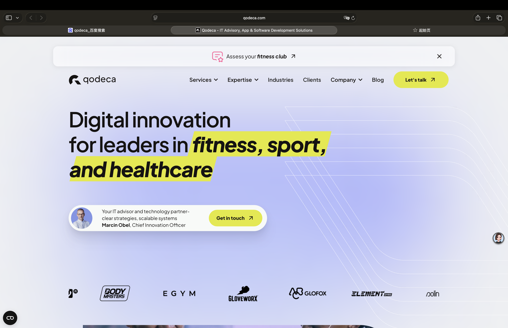
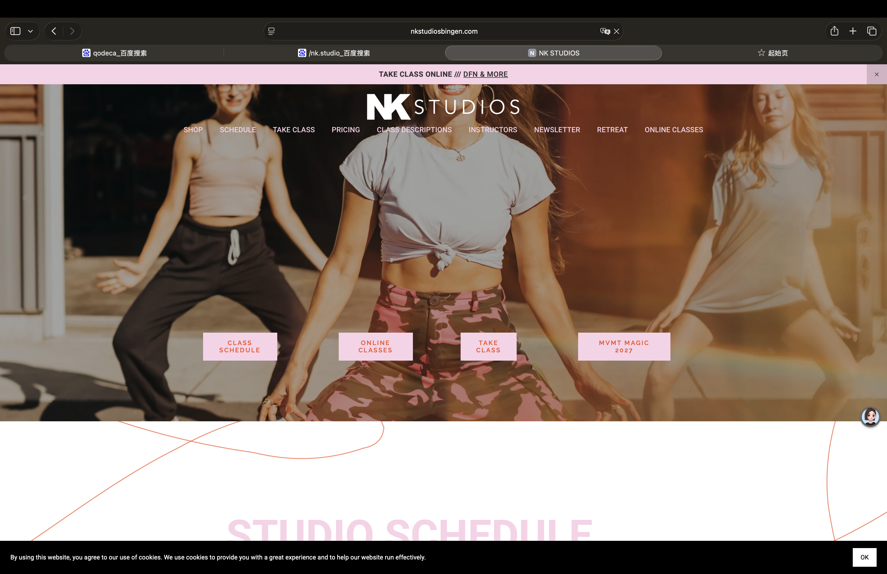
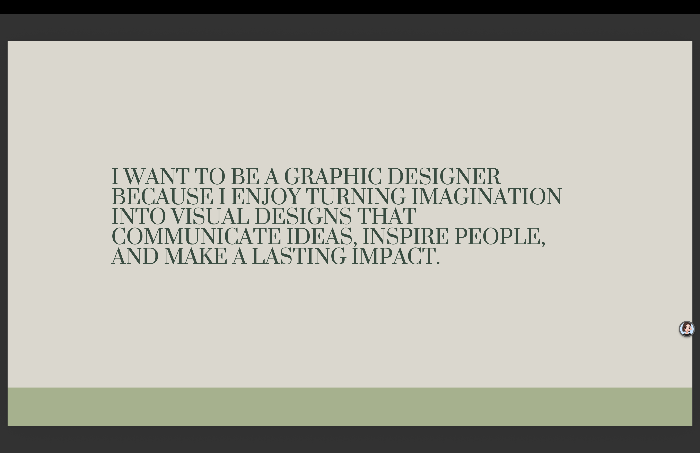
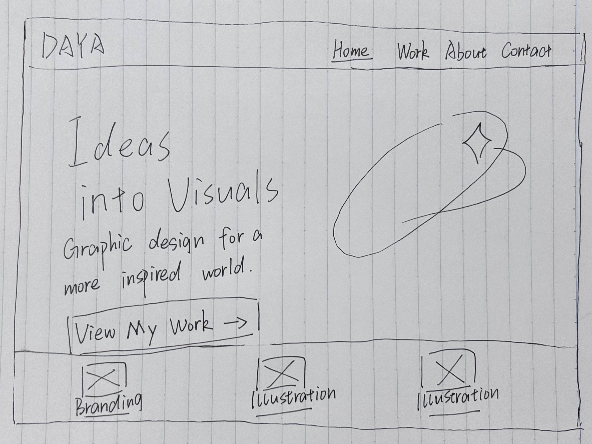

Research
I analyzed two websites to see how they create a good impression through design and typography:
1. Qodeca: This site uses a clean layout with bright yellow highlights to draw attention to key text. The clear navigation and prominent "Let's talk" button make it look professional and easy to use.

2. /nk.studio: This site uses bold colors and creative animations. It leaves a strong impression by feeling modern and highly creative.

Process Work & Final Outcome
My 143-character response: Why do I want to be a graphic designer?

Homepage Draft: My initial sketch and layout idea for my portfolio website.

Reflections
Through this exercise, I learned that creating a good impression relies heavily on clear typography, visual hierarchy, and how well the design communicates the core message to the user.